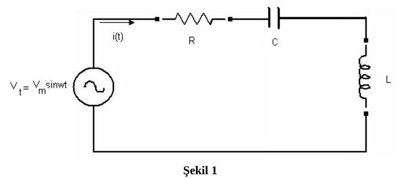
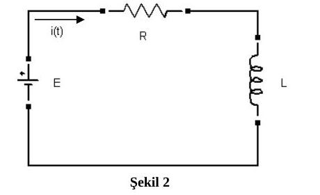

· MAT222
MAT222 Diferansiyel Denklemler: 2006 Vize Soruları ve Çözümleri (Sakarya Üniversitesi, Prof. Dr. Uğur Arifoğlu)
MAT222 – Diferansiyel Denklemler · 30.11.2006 · 17.10.2026
Bu yazı, Sakarya Üniversitesi Mühendislik Fakültesi Elektrik-Elektronik Mühendisliği Bölümü için Prof. Dr. Uğur Arifoğlu tarafından hazırlanan 30 Kasım 2006 tarihli diferansiyel denklemler vize sorularını ve çözümlerini içeriyor. MAT222 arşivimde bulunan beş sayfalık belgenin denklemleri ve çözüm adımları metne aktarıldı. Word'den dönüştürülen PDF yazının sonunda indirilebilir.
Bu içerik üçüncü taraf bir kaynağa aittir; arşiv ve nostalji amacıyla kaynak belirtilerek paylaşılmıştır. Hak sahibinin talebi hâlinde kaldırılır.
Sınav süresi 100 dakika. Belgede yalnız ders notlarının açık olduğu, diğer not ve açıklamaların kaldırılacağı ve soru kâğıtlarının öğrencide kalacağı belirtiliyor. Yedi sorunun puanları sırasıyla 15, 15, 20, 5, 15, 15 ve 15.
Not: PDF sayfalarında denklemler ve devre çizimleri korunmuş; otomatik metin dökümünde çıkmayan matematik ifadeleri görsellerden okunmuştur.
Soru 1: Sinüzoidal kaynaklı seri RLC devresi — 15 puan
Şekil 1'deki seri devrede R = 2 Ω, L = 1 H, C = 1 F, V_m = 220√2 V ve ω = 2π·50 rad/s veriliyor. Kaynak v(t) = V_m sin(ωt). Devreden akan i(t) akımının genel çözümünü bulunuz.

Çözüm
L i′(t) + R i(t) + (1/C)∫i(t)dt = V_m sin(ωt)
Her iki tarafın türevi alınıp parametreler yerleştirildiğinde kaynakta şu denklem elde ediliyor:
i″(t) + 2i′(t) + i(t) = 9,77·10⁴ cos(ωt)
Homojen denklem için karakteristik polinom α² + 2α + 1 = (α + 1)² olduğundan:
i_h(t) = C₁e^(−t) + tC₂e^(−t)
Özel çözüm tahmini i_p = A sin(ωt) + B cos(ωt). Türevler:
- i_p′ = Aω cos(ωt) − Bω sin(ωt)
- i_p″ = −Aω² sin(ωt) − Bω² cos(ωt)
Sinüs ve kosinüs katsayıları eşitleniyor. Kaynaktaki sayısal denklemler:
- −98696A − 628B + A = 0
- −98696B + 628A + B = 9,77·10⁴
Belgede A = 0,63·10⁻², B = −0,98 bulunarak sonuç şöyle veriliyor:
i_g(t) = C₁e^(−t) + tC₂e^(−t) + 0,63·10⁻² sin(ωt) − 0,98 cos(ωt)
Not: Kaynakta ikinci katsayı denklemine geçişte “−Bω² + 2Aω + B = −1” yazıyor; aynı satırın devamı ve asıl denklem sağ tarafın ωV_m ≈ 97743,42 olduğunu gösteriyor. Tam parametrelerle A ≈ 0,00630462 ve B ≈ −0,990318 bulunur. Kaynağın −0,98 değeri ve yuvarlatılmış sonuç yukarıda korundu.
Soru 2: Doğru gerilim kaynaklı RL devresi — 15 puan
Şekil 2'deki seri devrede E = 100 V, R = 2 Ω, L = 4 H ve i(0) = 3 A. İçinde belirsiz sabit kalmayacak biçimde akımın tam çözümünü bulunuz.

Çözüm
E = Li′ + Ri ⇒ 100 = 4i′ + 2i ⇒ 50 = 2i′ + i
Homojen çözüm i_h = C₁e^(−0,5t); sabit özel çözüm i_p = 50. Genel çözüm:
i_g(t) = C₁e^(−0,5t) + 50
i(0) = 3 koşulu 3 = C₁ + 50, yani C₁ = −47 verir:
i(t) = −47e^(−0,5t) + 50 A
Soru 3: Durum denklemleri — 20 puan
Durum değişkenleri v_C(t) ve i_L(t) için aşağıdaki sistem veriliyor:
- v_C′ = −(G/C)v_C − ((1 − G)/C)i_L + (1/C)i_k(t)
- i_L′ = (1/L)v_C − (1/L)i_L
G = 1 mho, C = 1 F, L = 1 H. Kaynak grafiği t = 0'da 5 A'e çıkan bir basamak: i_k(t) = 5u(t). Durum değişkenlerinin genel çözümlerini bulunuz.
Çözüm
Parametreler yerleştirilince sistemin matrisi A = [−1, 0; 1, −1] ve giriş vektörü (1, 0)ᵀ olur. Karakteristik denklem:
det(αI − A) = (α + 1)² = 0
Kaynakta homojen çözüm önce (C₁, C₂)ᵀe^(−t) + (C₃, C₄)ᵀte^(−t) olarak deneniyor. Sistemde yerine konduğunda:
−C₁ = −C₁ + C₃ ⇒ C₃ = 0
C₁ − C₂ = −C₂ + C₄ ⇒ C₄ = C₁
Böylece:
- v_C,h = C₁e^(−t)
- i_L,h = C₂e^(−t) + C₁te^(−t)
Sabit kaynak için özel çözüm (A₁, A₂)ᵀ olarak alınıyor. 0 = −A₁ + 5 ve 0 = A₁ − A₂ denklemleri A₁ = A₂ = 5 veriyor. Belgedeki genel çözümün bileşenleri:
- v_C,g(t) = C₁e^(−t) + 5u(t)
- i_L,g(t) = C₂e^(−t) + C₁te^(−t) + 5u(t)
Not: Bu ifadeler t > 0 bölgesinde sabit 5 A girişle denklemleri sağlar. Basamak eklenmiş hâlini t = 0'ı da içeren küresel çözüm olarak okumak, türevlerde kaynak sistemde bulunmayan dürtüler üretir; anahtarlama anı başlangıç koşullarıyla ayrıca ele alınmalıdır. Kaynak özel çözüm vektörünün tamamına “Amper” yazmış; v_C'nin birimi volt, i_L'nin birimi amperdir. (8) numaralı ara eşitlikte türev açılımında da işaret/terim hataları vardır; ardından bulunan C₃ = 0, C₄ = C₁ ilişkileri ve (9) numaralı homojen çözüm doğrudur.
Soru 4: Eğri ailesinin diferansiyel denklemi — 5 puan
y = Ax + B/x ailesinin diferansiyel denklemini bulunuz.
Çözüm
xy = Ax² + B
y + xy′ = 2Ax
2y′ + xy″ = 2A
Son iki bağıntıdan A yok edilince:
(y + xy′)/(2x) = (2y′ + xy″)/2
x²y″ + xy′ − y = 0
Not: Kaynak son iki bağıntıya “(12) ve (12)” diye atıf yapıyor; ikinci atıf (13) olmalıdır. Aile x ≠ 0 için tanımlıdır.
Soru 5: Tam diferansiyel denklem ve integrasyon çarpanı — 15 puan
(x² + 2xy + y²) dx + (x² − y²) dy = 0
Denklem tam mıdır? Değilse μ = μ(x + y) = μ(v) alarak tam hâle getiriniz ve genel çözümü bulunuz.
Çözüm
M = x² + 2xy + y² ve N = x² − y² için M_y = 2x + 2y, N_x = 2x. Denklem tam değildir. v = x + y alınırsa:
μ′/μ = (N_x − M_y)/(Mv_y − Nv_x) = −2y/(2xy + 2y²) = −1/(x + y)
μ′(v)/μ(v) = −1/v ⇒ μ = 1/v = 1/(x + y)
Denklem μ ile çarpıldığında:
(x + y) dx + (x − y) dy = 0
Yeni katsayılar için M_y = N_x = 1. Potansiyel fonksiyon hesaplanıyor:
u_x = x + y ⇒ u = x²/2 + xy + C(y)
u_y = x + C′(y) = x − y ⇒ C′(y) = −y
u = x²/2 + xy − y²/2 + C₁
Kaynak son satırı u(x, y) = x² + 2xy − y² + C₁ biçiminde veriyor.
Not: Son satırda potansiyel fonksiyonun değişkenli kısmı ikiyle çarpılmıştır; aynı u fonksiyonu olarak eşitlik doğru değildir. Sabitin yeniden adlandırılmasıyla çözüm ailesi x² + 2xy − y² = C biçiminde yazılabilir. μ = 1/(x + y) yalnız x + y ≠ 0 bölgesinde kullanılabilir; özgün denklemde ayrıca y = −x çözümü vardır. Logaritmalı integrasyon adımları uygun işaret bölgesinde veya mutlak değerlerle okunmalıdır.
Soru 6: u = e^y dönüşümü — 15 puan
e^y y′ + e^y = 4e^(−x) sin x denkleminin genel çözümünü u = e^y dönüşümüyle bulunuz.
Çözüm
u′ = e^y y′ olduğundan denklem u′ + u = 4e^(−x) sin x olur. Homojen çözüm:
u_h = Ce^(−x)
Sabitin değişimiyle C = C(x) alınır:
C′e^(−x) = 4e^(−x) sin x ⇒ C′ = 4 sin x ⇒ C = −4 cos x + C₁
Kaynağın genel çözümü:
e^y = −4e^(−x) cos x + C₁e^(−x)
Not: Gerçek y için sağ taraf pozitif olmalıdır; eşdeğer açık çözüm y = −x + ln(C₁ − 4 cos x), C₁ − 4 cos x > 0 koşuluyla yazılabilir.
Soru 7: Euler diferansiyel denklemi — 15 puan
2x²y″ + 8xy′ + 4y = 2x² denkleminin genel çözümünü bulunuz.
Çözüm
İkiye bölünüp x = e^t dönüşümü yapılır:
x²y″ + 4xy′ + 2y = x²
dy/dx = e^(−t)dy/dt
d²y/dx² = e^(−2t)d²y/dt² − e^(−2t)dy/dt
Böylece t değişkenine göre denklem:
y_tt + 3y_t + 2y = e^(2t)
Karakteristik denklem α² + 3α + 2 = 0; kökler −1 ve −2. Homojen çözüm C₁e^(−t) + C₂e^(−2t). Özel çözüm Ae^(2t) denenirse:
4Ae^(2t) + 6Ae^(2t) + 2Ae^(2t) = e^(2t) ⇒ A = 1/12
y = C₁e^(−t) + C₂e^(−2t) + e^(2t)/12
t = ln x yerine konularak:
y(x) = C₁/x + C₂/x² + x²/12
Not: Kaynağın x = e^t, t = ln x dönüşümü x > 0 içindir. Son ifade x < 0 aralıklarında da denklemi sağlar; x = 0 tekil noktadır.